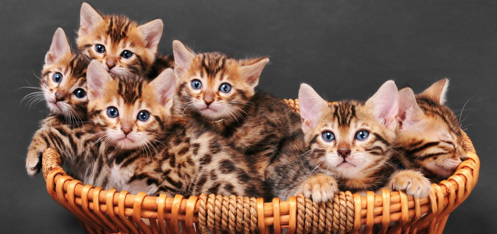

Зміст:

Виникла порода завдяки старанням студентки Жанни Міль, що жила в Аризоні й
хотіла вивести породу домашніх кішок, зовні схожих на диких.
Родоначальниками породи є дика бенгальська кішка Felis Bengalensis
(звідки порода й одержала свою назву) й американська короткошерста. Надалі
в становленні породи брали участь кішки інших порід:
єгипетські мау, бурмеси й різні кішки із забарвленням табі.
Знадобилося майже 22 роки на те, щоб нова порода затвердилася.
У 1990-91 pp. нова порода була допущена до участі в чемпіонатах.
Поступово порода набуває популярності.
Представники породи завезені до Європи, але оскільки вони поки що там
рідкісні, є одними з найдорожчих.[1]
Бенгальська кішка має досить великі габарити. Так, доросла особина може важити 8 кг. Особливість вихованця кидається в очі здалеку. Ця тварина нагадує дику кішку і здатна на будь-які "подвиги". Бачачи його, багато людей можуть злякатися. Але істинний характер тварини не має нічого спільного з його хижою зовнішністю. Тільки 15-20% генів коти успадкували від леопарда.
Wikipedia
Від своїх диких предків бенгальці успадкували короткий кишечник, а разом з цим - чутливу травну систему. Її розлад легко спровокувати, а потім кішка буде довго мучиться діареєю. Щоб цього не сталося, потрібно слідувати чітким правилам в її раціоні. Нові продукти дають коту з великою обережністю (по трохи).
Годувати бенгальця можна:
Ці тварини цілком здорові особини. Однак і їм властиві деякі хвороби. З них можна виділити - гіпертрофічну кардиоміопатію. Дана хвороба часто вражає котів, які перенесли кастрацію.
Часто ці вихованці страждають:| Назва породи | Бенгальська кішка |
|---|---|
| Країна походження | США |
| Час зародження породи | 1963 рік |
| Риси характеру | вольова, активна, розумна |
| Вага | 5,5-8 кг |
| Тривалість життя | 12-15 років |